Case 7: Karting Genk
Miro linkFigma link
Context & achtergrond
Karting Genk wil meer groepen aantrekken die komen karten “voor de fun” (vriendengroepen, studenten maar ook bedrijven). De vraag: bedenk een vaste raceformule die je makkelijk kan herhalen en promoten, met een duidelijke “competitie-vibe”.
Voor deze case werkten we via I am Ten aan een volledig concept rond een competitieve kartingervaring voor studenten en jongvolwassenen. Hierbij lag de focus niet enkel op branding, maar ook op de volledige online ervaring, social campagnes en de beleving van de gebruiker.
Doelgroep
- Studenten van hogescholen en universiteiten
- Internationale studenten
- Partners & sponsors
- Organisaties en scholen
Focus van de klant
- Naam & branding
- Campagnebeelden & social templates
- Website / landing concept
- App concept met ranking & gamification
Mijn aandeel
Sprint 1
In sprint 1 heb ik als eerste de vragen helpen opstellen en bladzijdes aan notities uitgeschreven. Ook heb ik de concept poster grotendeels gemaakt. Daarnaast heb ik een groot deel van de benchmarking uitgewerkt. Hierbij onderzochten we zowel directe als indirecte concurrenten en inspiratiebronnen. We bekeken welke elementen goed werkten op hun websites en social media, en vergeleken die met ons eigen idee voor het project.
Vervolgens heb ik op basis van de SWOT-analyse en benchmarking de volledige persona’s uitgewerkt. Uiteindelijk kwamen we uit op drie persona’s: een internationale student, een vrouwelijke socialmedia-gerichte studente en een student die al langer geïnteresseerd is in de racewereld.
Ten slotte heb ik ook een groot deel van de bull’s eye uitgewerkt en de eerste versie van de user flow opgesteld.
(Ik raad aan om op de links vanboven op de pagina te klikken voor de leesbare varianten van mijn aandelen)
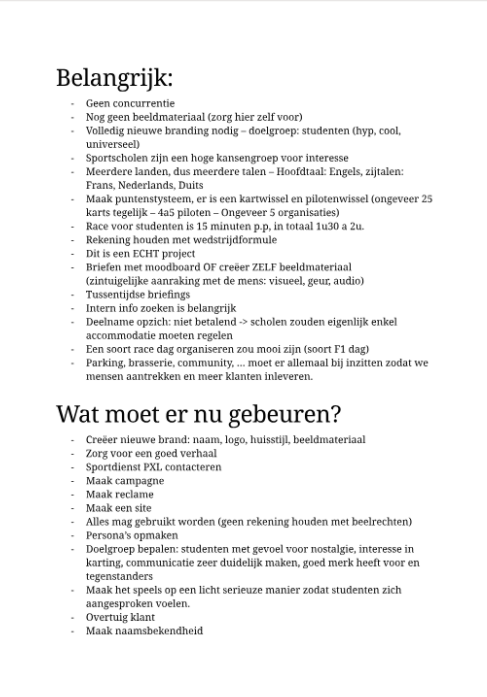
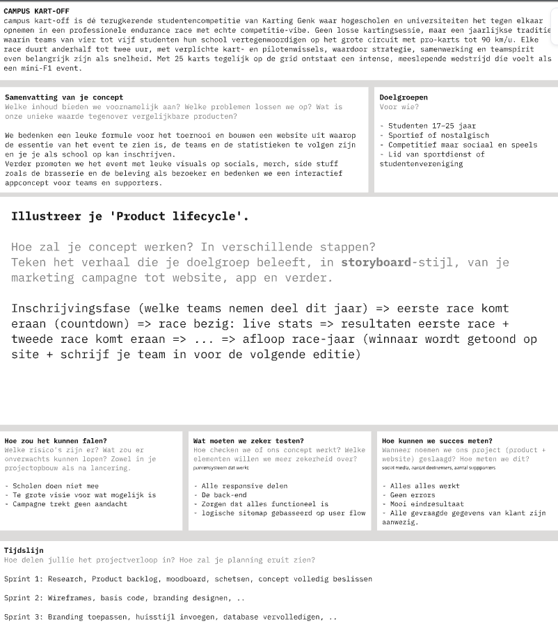
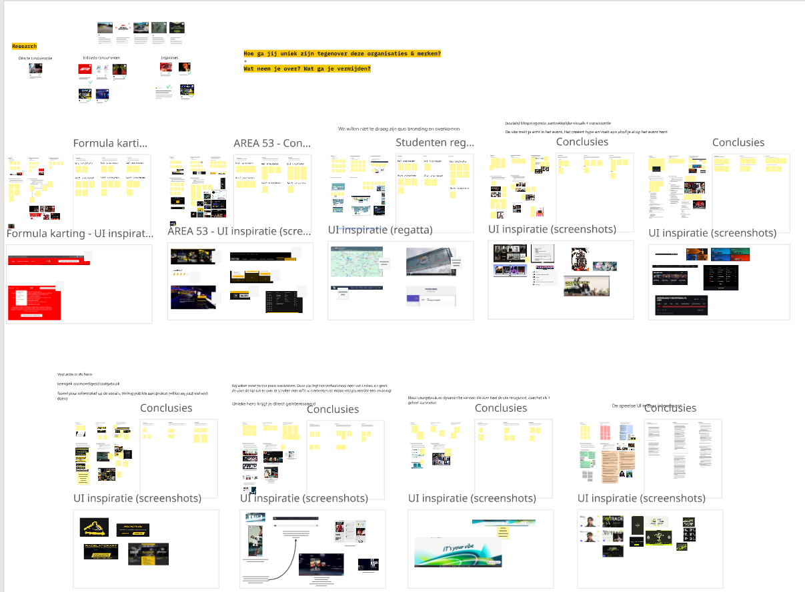
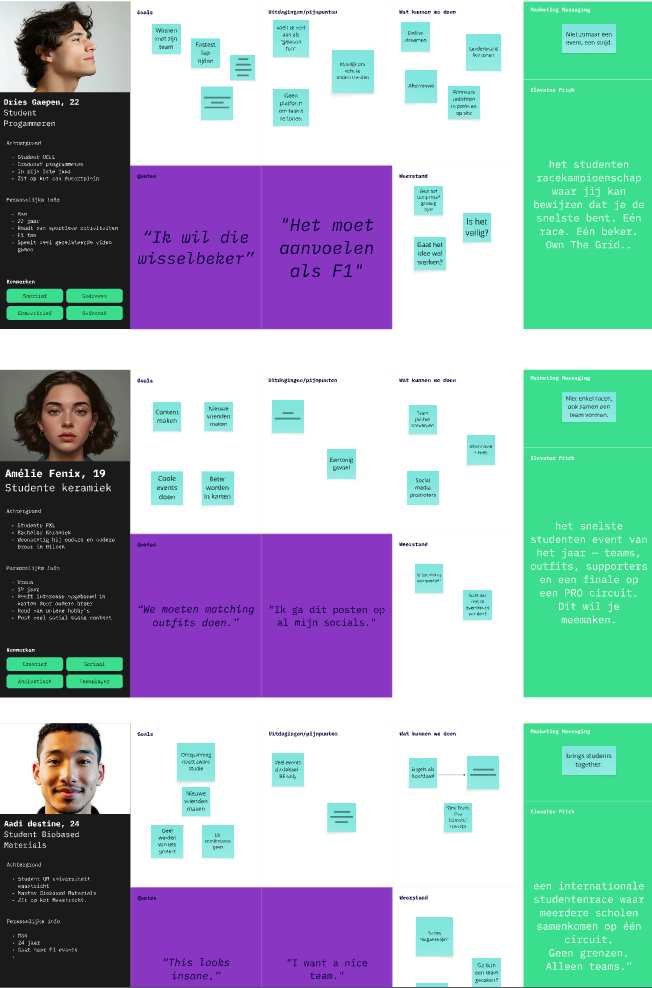
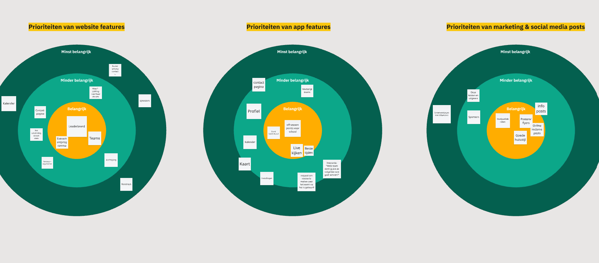
Sprint 2
In sprint 2 begon iedereen met het maken van verschillende moodboards. Daarna hebben we die samengelegd en verwerkt tot één sterk en afgewerkt moodboard.
Ik ben ook beginnen kijken naar mogelijke kleurenthema’s en heb meegeholpen bij het bepalen van de brand personality. Daarna ben ik gestart met wireframes voor de website, die ik vervolgens verder heb uitgewerkt in eerste designs.
Daarnaast heb ik de user flows verder aangepast en samen met DVO gewerkt rond de SDG’s.
Ten slotte heb ik ook de eind versie van de user flows gemaakt.
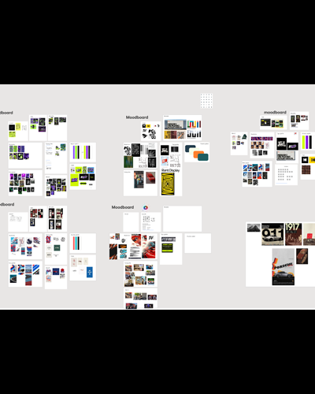
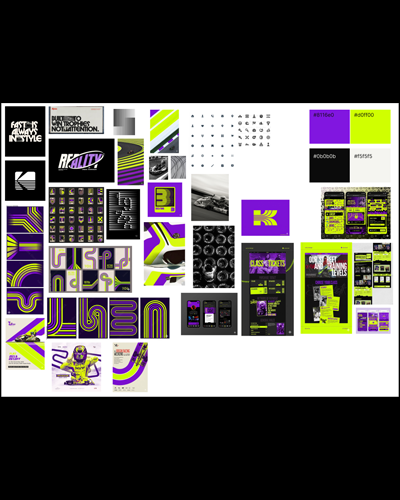
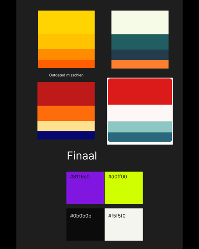
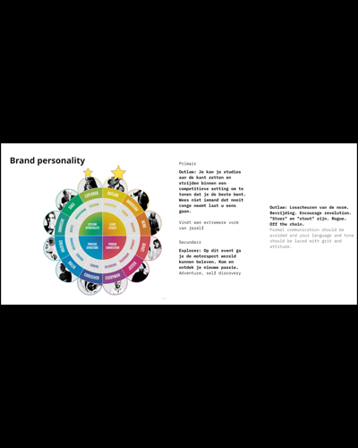
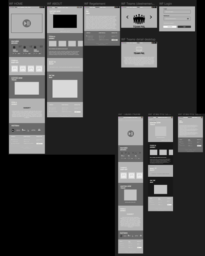
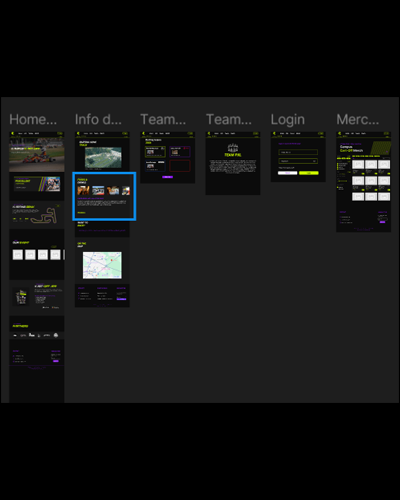
Sprint 3
Tijdens sprint 3 heb ik jammer genoeg minder kunnen bijdragen door persoonlijke en medische omstandigheden. Ondanks dat heb ik geprobeerd om vanop afstand betrokken te blijven bij het project.
Uiteindelijk heb ik nog een groot deel van de mock-ups uitgewerkt, meegedacht over het campagneplan en de SDG rond gender equality verder uitgewerkt.
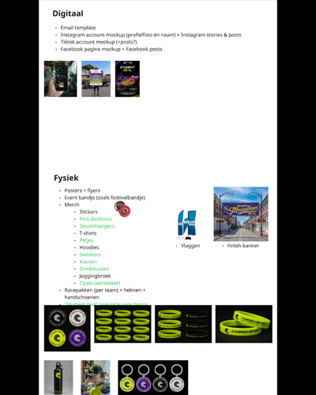
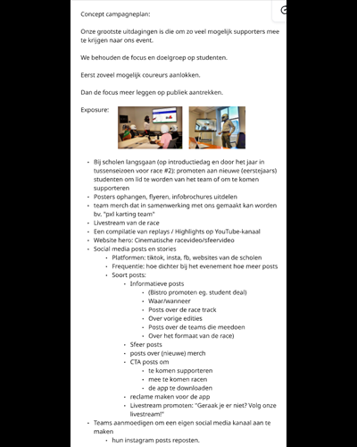
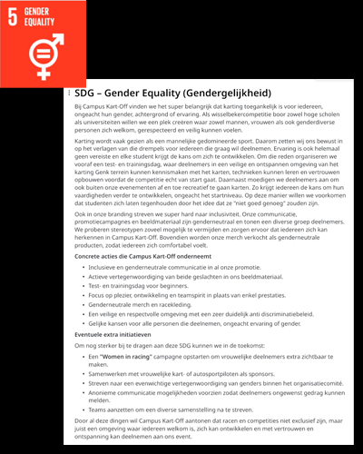
Wat ik eruit geleerd heb
Uit deze case heb ik vooral geleerd hoe belangrijk samenwerking en communicatie zijn binnen een creatief project. Iedereen werkte aan een ander onderdeel, maar uiteindelijk moest alles één geheel vormen.
Daarnaast heb ik veel bijgeleerd over branding, doelgroepgericht ontwerpen en het uitwerken van user flows. Ook heb ik geleerd om flexibeler om te gaan met feedback en beter na te denken over designkeuzes.
Ten slotte heb ik geleerd hoe belangrijk doorzettingsvermogen is, zeker binnen groepswerk en langere projecten.